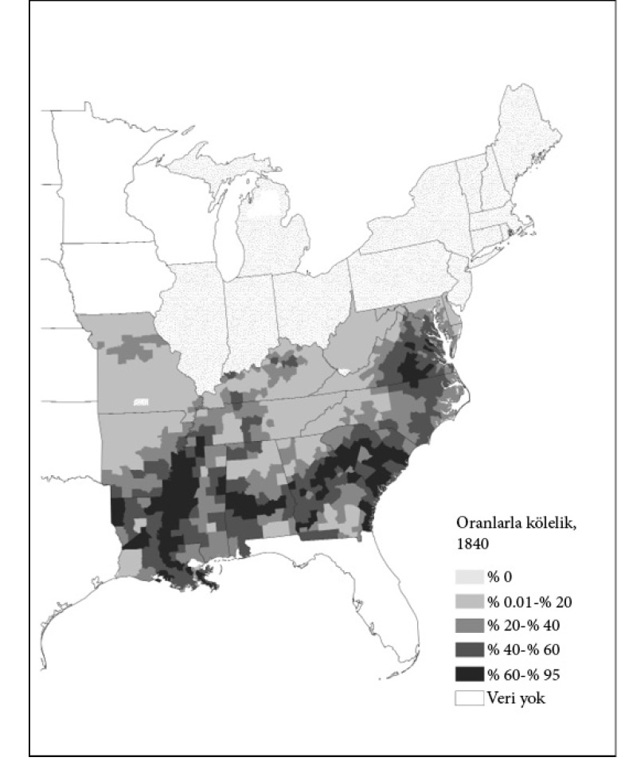
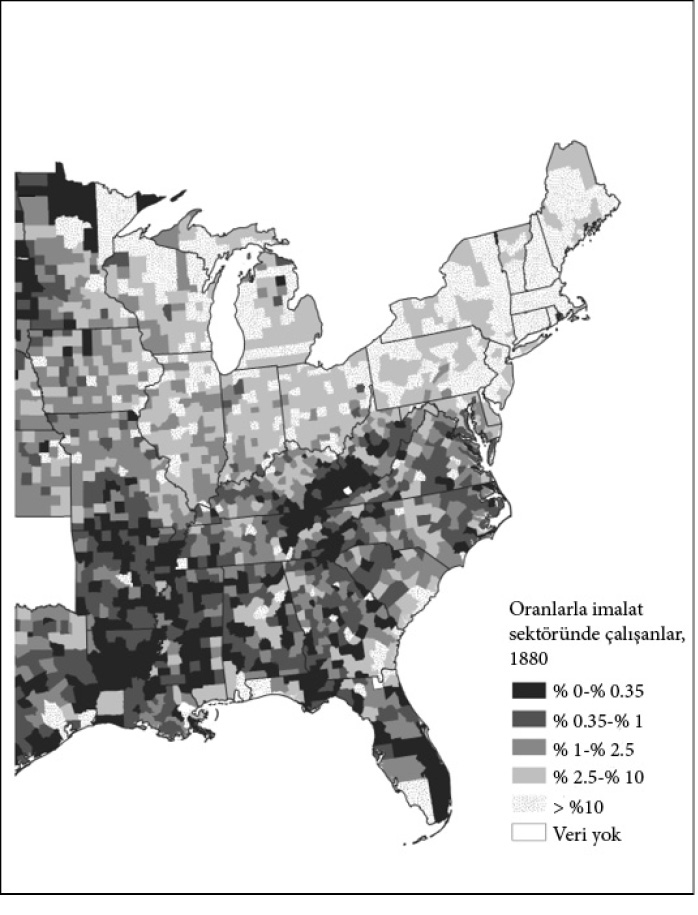

12

Kısır döngü
Artık Bo’ya tren yok
1896’da Batı Afrika ülkesi Sierra Leone’nin tamamı bir İngiliz sömürgesine dönüştü. Başkent Freetown aslında ülkesine geri dönen azat edilmiş köleler için 18. yüzyıl sonlarında bir yurt olarak kurulmuştu. Fakat Freetown bir İngiliz sömürgesine dönüştüğünde Sierra Leone’nin iç bölgeleri hâlâ pek çok Afrika krallığından oluşuyordu. 19. yüzyılın ikinci yarısında Afrikalı hükümdarlarla yapılan bir dizi antlaşmayla İngilizler hâkimiyetlerini yavaş yavaş iç bölgelere doğru genişlettiler. 31 Ağustos 1896’da İngiliz hükümeti bu antlaşmalar uyarınca sömürgeyi protektora ilan etti. İngilizler önemli hükümdarları tanıdılar ve onlara yeni bir unvan verdiler: “Paramount Chief-Yüce Şef”. Örneğin Doğu Sierra Leone’deki modern elmas madenciliği bölgesi Kono’da güçlü bir savaşçı kral olan Suluku’yla karşılaştılar. Kral Suluku, “Paramount Chief Suluku”ya dönüştürüldü ve protektoraya bağlı bir idari birim olarak Sandor Şefliği kuruldu.
Suluku gibi krallar bir İngiliz idarecisiyle antlaşmalar imzalasalar da bu antlaşmaların bir sömürge kurmak için carte blanche23 olarak yorumlanacağını anlamamışlardı. Ocak 1898’de İngilizler bir kulübe vergisi (her haneden toplanan 5 şilinlik vergi) koymaya çalıştıklarında şefler ayaklanıp “Kulübe Vergisi İsyanı” olarak bilinen bir iç savaş başlattılar. Kuzeyde başlamasına karşın en güçlü ve uzun soluklu olduğu yer Güney, özellikle de Mende etnik grubunun hâkimiyetindeki Mendeland’di. Kulübe Vergisi İsyanı kısa sürede bastırıldı fakat İngilizlere Sierra Leone hinterlandını kontrol altına almanın zorluklarını da göstermiş oldu. İngilizler Freetown’dan iç bölgelere doğru bir demiryolu inşaatına çoktan başlamışlardı. Çalışma 1896 Martı’nda başladı ve demiryolu hattı Aralık 1898’de Kulübe Vergisi İsyanı’nın ortasında Songo Town’a ulaştı. 1904’e ait İngiliz parlamento kayıtlarında şöyle deniyor:
Sierra Leone Demiryolları hadisesinde, Şubat 1898’de patlak veren yerli ayaklanması bir süre için çalışmaların tamamen durmasına ve ekibin tüm düzeninin bozulmasına yol açtı. İsyancıların demiryoluna hücum etmesiyle ekibin tümü Freetown’a kaçmak zorunda kaldı [...] bugün Freetown’a 55 mil uzaklıktaki Rotifunk o tarihte tamamen asilerin elindeydi.
Aslında Rotifunk 1894’teki demiryolu hattı planında yoktu. Rota isyanın başlamasının ardından değiştirildi, böylece kuzeydoğuya gidecek yerde Rotifunk ve Bo üzerinden güneye, Mendeland’e yöneldi. İngilizler hem Mendeland’e, isyanın merkezine, hem de başka isyanların patlak vermesi ihtimaline karşı hinterlandın karışıklık çıkması muhtemel diğer bölgelerine hızlı erişim sağlamak istiyordu.
Sierra Leone 1961’de bağımsızlığına kavuştuğunda İngilizler iktidarı Sir Milton Margai’ye ve onun güneyde, özellikle Mendeland’de ve doğuda destek bulan Sierra Leone Halk Partisi’ne (SLPP) devrettiler. Sir Milton’dan sonra başbakanlık koltuğuna 1964’te kardeşi Sir Albert Margai oturdu. 1967’de SLPP kıyasıya bir rekabetin hüküm sürdüğü bir seçimi muhalefetteki Siaka Stevens liderliğindeki Tüm Halk Kongresi Partisi (APC) karşısında kıl payıyla kaybetti. Stevens kuzeydeki Limbalardandı ve APC çoğunlukla kuzeyli etnik gruplardan Limba, Temne ve Loko’dan destek alıyordu.
Demiryolu başlangıçta İngilizlerin Sierra Leone’yi idare etmeleri için tasarlandıysa da 1967’ye gelindiğinde kahve, kakao ve elmas gibi ülkenin ihraç ürünlerinin çoğunun nakliyesinde ekonomik bir rol oynuyordu. Kahve ve kakao yetiştiren çiftçiler Mende’deydi ve demiryolu Mendeland’ın dünyaya açılan penceresiydi. 1967 seçimlerinde Albert Margai Mendeland’dan büyük oy aldı. Stevens iktidarda kalmayı Mendeland’ın ihracatını artırmaktan çok daha fazla önemsiyordu. Yürüttüğü mantık basitti: Mende için iyi olan her şey SLPP için iyi, Stevens içinse kötüydü. Bu yüzden Mendeland’e giden demiryolu hattını söktü. Ardından icraatına devam etti ve değişimi mümkün olduğunca geri dönülemez hale getirmek için hattı ve demiryolu araçlarını elden çıkardı. Bugün bir araçla Freetown’dan Doğu’ya giderseniz harap haldeki Hastings ve Waterloo tren istasyonlarından geçersiniz. Artık Bo’ya tren yoktur. Stevens’ın sert icraatı elbette Sierra Leone ekonomisinin en faal sektörlerinden bazılarına ağır hasar verdi. Fakat iş iktidarı sağlama almakla ekonomik büyümeyi teşvik etmek arasında seçim yapmaya geldiğinde bağımsızlık sonrasının pek çok liderinin yaptığı gibi Stevens da iktidarı sağlama almayı seçti ve asla ardına bakmadı. Bugün artık Bo’ya giden bir tren bulamazsınız; çünkü tıpkı demiryollarının Rusya’ya devrim getireceğinden korkan Çar I. Nicholas gibi Stevens da demiryolunun rakiplerini güçlendireceğinden korkmuştu. Sömürücü kurumların başındaki diğer pek çok idareci gibi siyasal gücüne yönelik meydan okumalardan korkuyordu ve bu meydan okumaları savuşturmak için ekonomik büyümeden vazgeçmeye hazırdı.
Stevens’ın stratejisi ilk bakışta İngilizlerinkiyle tezat oluşturuyor gibi gelebilir. Fakat aslında İngiliz idaresi ve Stevens rejimi arasında kısır döngünün mantığını ortaya koyan kayda değer miktarda süreklilik söz konusuydu. Stevens, Sierra Leone’yi ülke halkının kaynaklarını benzer yöntemlerle sömürerek idare etti. 1985’te hâlâ iktidarda olmasının nedeni halkoyuyla yeniden seçilmesi değildi, 1967’de siyasal rakiplerini özellikle de SLPP üyelerini gerek öldürüp gerekse taciz ederek katı bir diktatörlük kurmasıydı. 1971’de kendini yeniden başkan yaptı ve 1978’den sonra Sierra Leone’nin yalnızca tek partisi vardı; Stevens’ın APC’si. Böylelikle Stevens iktidarını başarıyla sağlama almıştı; bunun bedeli hinterlandın büyük kısmının yoksullaşması olsa da.
İngilizler sömürgecilik döneminde Sierra Leone’yi idare etmek için Afrika’daki pek çok sömürgelerinde yaptıkları gibi bir dolaylı idare sistemi kullandılar. Bu sistemin temelinde vergi toplayan, adalet dağıtan ve düzen sağlayan paramount chief’ler bulunuyordu. İngilizler kakao ve kahve üreticilerinin hakkından onları yalnızlaştırarak değil ürünlerini güya çiftçilere yardım edecek olan sömürge bakanlığının kurduğu bir pazarlama komitesine satmaya zorlayarak geldi. Tarım ürünlerinin fiyatları zamanla büyük dalgalanmalar gösterdi. Kakao fiyatları bir yıl yüksek bir yıl düşük olabiliyordu. Buna bağlı olarak çiftçilerin gelirlerinde de dalgalanma yaşanıyordu. Pazarlama komitelerini meşru göstermenin dayanağı fiyat dalgalanmalarını çiftçilerin değil komitenin absorbe edecek olmasıydı. Dünya fiyatları yüksek olduğunda komite Sierra Leone’deki çiftçilere dünya fiyatlarından az ödeme yapıyor, dünya fiyatları düştüğündeyse fazla ödeme yapıyorlardı. Prensipte iyi bir fikir gibi duruyordu. Fakat işin aslı çok farklıydı. Sierra Leone Ürün Pazarlama Komitesi 1949’da kuruldu. Elbette komitenin iş görmesi için bir gelir kaynağına ihtiyacı vardı. Bunu elde etmenin doğal yolu, ister iyi ister kötü bir yılda olsun, ellerine geçmesi gerekenden bir parça az ödeme yapmaktı. Bu fonlar daha sonra genel giderler ve idari giderler için kullanılabilirdi. Çok geçmeden bu “bir parça az”, çok daha aza döndü. Sömürge devleti pazarlama komitesini çiftçilerden yüksek vergi almanın bir yolu olarak kullanıyordu.
Çoğu kişi sömürge idaresinin Sahra-altı Afrika’da uyguladığı yöntemlerinin en kötü örneklerinin bağımsızlığın ardından sona ereceğini ve pazarlama komitelerinin çiftçileri aşırı ölçüde vergilendirmek için kullanılmasının bir son bulacağını umuyordu. Fakat bunların hiçbiri gerçekleşmedi. Aslına bakılırsa, pazarlama komitelerinin çiftçilerin sömürülmesi için kullanılması daha da habis bir hal aldı. 1960 ortalarında hurma çekirdeği çiftçileri pazarlama komitesinden dünya fiyatının yüzde 56’sını; kakao çiftçileri yüzde 48’ini; kahve çiftçileri yüzde 49’unu alıyorlardı. Stevens 1985’te özenle seçtiği halefi Joseph Momoh’un başkan olması için istifa edip makamından ayrıldığında, bu rakamlar sırasıyla yüzde 37, 19 ve 27’ydi. Bu rakamlar kulağa ne kadar acıklı gelse de çiftçilerin Stevens hükümdarlığı döneminde aldığından iyiydi: O dönemde fiyatlar genellikle yüzde 10’lara kadar düşüyordu ki, bu da çiftçilerin gelirinin yüzde 90’ının Stevens hükümeti tarafından sömürüldüğü ve bunun yol ya da eğitim gibi kamu hizmetlerinin yerine getirilmesi için değil, kendini ve maiyetindekileri zenginleştirmek ve siyasal destek satın almak için yapıldığı anlamına geliyordu.
İngilizler dolaylı idarenin bir parçası olarak paramount chief”in ömür boyu makamda kalmasını da şart koşmuşlardı. Şefliğe hak sahibi olmak için tanınmış bir “hanedandan” gelmek gerekiyordu. Şeflikte hanedan kimliği zamanla gelişiyordu fakat esasen belirli bölgelerde kral soyundan ve 19. yüzyılda İngilizlerle antlaşma imzalayan elit ailelerden gelmeye dayanıyordu. Şefler seçimle geliyorlardı fakat bunlar demokratik seçimler değildi. Kimin paramount chief olacağına üyeleri daha az önemli köylerin şeflerinden çıkan ya da paramount chief’ler, köy şefleri ya da İngiliz yetkilileri tarafından atanan Kabile İdaresi adındaki bir organ karar veriyordu. Bu sömürge kurumunun bağımsızlıktan sonra kaldırılması ya da en azından reforme edilmesi beklenebilirdi. Fakat tıpkı pazarlama komisyonu gibi ona da bir şey olmadı ve değişmeden varlığını sürdürdü. Bugün paramount chief’ler hâlâ vergi toplama işini sürdürüyorlar. Artık topladıkları bir kulübe vergisi olmasa da onun yakın akrabası; bir kelle vergisi. 2005’te Kono bölgesindeki Sandor’un kabile idaresi yeni bir paramount chief seçti. Fasuluku hanedanı tek hanedan olduğundan yalnızca Fasuluku hanedanının adayları başvurabildi. Kazanan King Suluku’nun torununun torunu olan Sheku Fasuluku’ydu.
Pazarlama komisyonlarının davranışı ve geleneksel toprak sahipliği sistemi Sierra Leone’de ve Sahra-altı Afrika’da tarımsal verimliliğin neden bu denli düşük olduğunu açıklamak için son derece yararlıdır. 1980’lerde siyaset bilimcisi Robert Bates iktisat ders kitaplarına göre Afrika’da tarımın en dinamik ekonomik sektör olması gerekirken neden bu denli randımansız olduğunu anlamak için harekete geçti. Sonunda bunun coğrafyayla ya da 2. bölümde tanımladığımız doğası gereği tarımsal verimliliği düşürdüğü kabul edilen etkenlerle hiçbir alakasının olmadığını gördü. Asıl neden pazarlama komitelerinin uyguladığı fiyat politikalarının çiftçilerin yatırım yapmaları, gübre kullanmaları ve toprağı korumalarına yönelik tüm teşvikleri yok etmesiydi.
Pazarlama komitelerinin politikalarının kırsal kesimin çıkarlarına hiç mi hiç uygun olmamasının nedeni bu çıkarların hiçbir siyasal güce sahip olmamasıydı. Bu fiyat politikaları başka temel etkenlerle birleşerek arazi kullanım hakkını güvenceden yoksun hale getiriyor ve yatırım teşviklerini daha da baltalıyordu. Sierra Leone’de paramount chief’lerin işi yalnızca yasa ve düzeni korumak, adli hizmetleri yerine getirmek ve vergi almak değildi. Ayrıca “toprağın koruyucuları”ydılar. Aileler, klanlar ve sülaleler toprak için kullanım haklarına ve geleneksel haklara sahip olsalar da kimin nereyi süreceği konusunda son sözü söyleyen şefler oluyordu. Toprak mülkiyeti hakkınız ancak şefle bağlantınız varsa hatta aynı hanedandansanız güvencedeydi. Toprak alınıp satılamaz ya da bir kredi için teminat olarak gösterilemezdi ve eğer bir şefliğin dışında doğmuşsanız size de facto mülkiyet hakkı vereceği endişesiyle kahve, kakao ya da hurma ağacı gibi uzun ömürlü bir ekin dikemezdiniz.
İngilizlerin Sierra Leone’de geliştirdiği sömürücü kurumlar ile Avustralya gibi diğer sömürgelerde gelişen kapsayıcı kurumlar arasındaki tezat, madeni kaynakların işletilme biçiminden anlaşılabilir. Ocak 1930’da Doğu Sierra Leone’deki Kono’da elmas bulundu. Bu elmaslar alüvyaldi, yani derin madenlerden çıkmıyorlardı. Dolayısıyla onları çıkarmanın temel yöntemi nehirlerde elekten geçirmekti. Bazı sosyal bilimciler pek çok insanın madencilik yapmasına olanak tanıyarak potansiyel bir kapsayıcı fırsat yarattıkları için bunlara “demokratik elmaslar” diyor. Fakat Sierra Leone’de durum hiç de öyle değildi. İngiliz hükümeti elekten geçirerek elmas çıkarma yönteminin demokratik yönünü rahatlıkla göz ardı edip tüm protektora genelinde “Sierra Leone Selection Trust” adını verdikleri bir tekel kurdular ve onu Güney Afrikalı dev madencilik şirketi De Beers’e tahsis ettiler. Buna ilaveten 1936’da De Beers’e Sierra Leone’deki sömürge hükümetininkinden bile büyük bir ordu haline gelecek bir özel orduyu, “The Diamond Protection Force”u kurma yetkisi de verildi. Yine de, alüvyal elmasın yaygın biçimde bulunması denetimi güçleştiriyordu. 1950’lere gelindiğinde The Diamond Protection Force, muazzam bir çatışma ve kaos kaynağı olan binlerce yasadışı elmas madencisiyle boğuşuyordu. 1955’te İngiliz hükümeti bazı elmas bölgelerini Sierra Leone Selection Trust’ün dışındaki lisanslı madencilere açtı; fakat şirket hâlâ Yengema, Koidu ve Tongo Field’daki en zengin bölgeleri elinde tutuyordu. İşler bağımsızlıktan sonra daha da kötüye gitti. 1970’de Siaka, “Stevens Sierra Leone Selection Trust”ü fiilen kamulaştırarak hükümetin (yani fiilen Stevens’ın) yüzde 51’lik bir hisse aldığı “National Diamond Mining Company (Sierra Leone) Limited”i kurdu. Bu, Stevens’ın ülkedeki elmas madenciliğini ele geçirme planının başlangıç aşamasıydı.
19. yüzyıl Avustralyası’nda herkesin nazarı dikkatini celbeden elmas değil, 1851’de New South Wales ve yeni kurulmuş Victoria eyaletinde keşfedilen altındı. Sierra Leone’deki elmaslar gibi buradaki altın da alüvyaldi ve nasıl işletileceği hakkında bir karar verilmesi gerekiyordu. Daha önce tartıştığımız “İşgalciler”in önde gelen lideri John MacArthur’un oğlu James MacArthur gibiler maden bölgelerinin etrafına çit döşenmesini ve tekel hakkının açık artırmayla satılmasını teklif ettiler. Sierra Leone Selection Trust’ün bir Avustralya versiyonunu kurmak istiyorlardı. Gerçi, Avustralya’da pek çok kişi altın madenciliğinin yapıldığı bölgelere serbest erişim hakkı istiyordu. Kapsayıcı model galip geldi ve Avustralyalı yetkililer bir tekel kurmak yerine yıllık bir madencilik bedeli ödeyen herkese altın aramak ve çıkarma izni verdiler. Çok geçmeden, bu maceracılar ya da daha bildik bir tabirle altın arayıcıları, Avustralya siyasetinde özellikle de Victoria’da büyük bir güç haline geldiler. Genel oy hakkı ve gizli oyun gündeme gelmesinde önemli bir rol oynadılar.
Afrika’da Avrupa yayılmacılığı ve sömürge idaresinin iki habis etkisini daha önce görmüştük: Bunlar, Afrika’nın siyasal ve ekonomik kurumlarının sömürücü bir doğrultuda gelişmesini teşvik eden Atlantik köle ticaretinin başlaması ve Avrupalılarla rekabete girebilecek Afrika ticari tarımını saf dışı bırakmak için sömürge yasalarının ve kurumlarının kullanılması idi. Kölelik Sierra Leone’de kesinlikle bir güçtü. Sömürgecilik döneminde iç bölgelerde güçlü bir merkezi devlet yoktu, sadece karşılıklı husumet besleyen ve durmadan birbirine saldırıp karşı tarafın erkeklerini ve kadınlarını kaçıran çok sayıda krallık vardı. Kölelik yaygındı, muhtemelen nüfusun yüzde 50’si köle olarak çalışıyordu. Bölgesel hastalıklar beyaz nüfusa ait büyük ölçekli bir yerleşimin mümkün olmadığı anlamına geliyordu. Bu yüzden Afrikalılarla rekabet edecek beyazlar yoktu. Dahası, Johannesburg ölçeğinde bir madencilik ekonomisinin olmayışı, beyazların tarlalarından siyahi işgücüne talep olmamasının yanı sıra apartheid, Güney Afrika’sıyla benzer özelliklere sahip sömürücü işgücü piyasası kurumları oluşturmak için de bir teşvik olmadığı anlamına geliyordu.
Başka mekanizmalar da devredeydi. Sierra Leone’nin kakao ve kahve üreticileri beyazlarla rekabete girmemişlerdi fakat bir devlet tekeli olan pazarlama komitesi aracılığıyla hâlâ gelirlerine el konuluyordu. Ayrıca Sierra Leone dolaylı yönetimden de mustaripti. İngiliz yetkililerin dolaylı yönetime geçirmek istedikleri Afrika’nın pek çok bölgesinde kontrolünü ele geçirebilecekleri merkezi bir sistemi olmayan halklarla karşılaştılar. Örneğin İngilizler onlarla 19. yüzyılda karşılaştığında Doğu Nijerya’daki Igbo halkının bir şefi yoktu. Ardından İngilizler onlara warrant chiefs denen şefler yarattılar. İngilizler Sierra Leone’de dolaylı yönetimi mevcut kurumların ve idari sistemlerin üzerine inşa ettiler.
Yine de, 1896’da paramount chief olarak tanınan kişilerin tarihsel temellerinden bağımsız olarak, dolaylı yönetim ve onun paramount chief’lere sağladığı güçler Sierra Leone’deki mevcut siyaseti tamamen değiştirdiler. Her şeyden önce bir sosyal tabakalaşma sistemi getirdi; önceden bunların hiçbiri mevcut değildi. Şeflerin halk desteğine ihtiyaç duyduğu çok daha akıcı bir sistemin yerini bir kalıtsal aristokrasi aldı. Bu yeni yapılanma, Freetown ya da Britanya’daki patronlarına medyun şeflerin makamlarını ömür boyu koruduğu ve yönettikleri halka karşı çok daha az sorumlu olduğu katı bir sistemdi. İngilizler mevcut kurumları başka yollarla, örneğin meşru şeflerin yerine daha işbirlikçi kişiler getirerek yıktıkları için çok memnundular. Gerçekten de, bağımsız Sierra Leone’nin ilk iki başbakanını destekleyen Margai ailesi, Kulübe İsyanı’nda şef Nyama karşısında İngilizlerin tarafını tutarak Aşağı Banta şefliğinde iktidara geldiler. Nyama görevden alındı, Margailer şef oldular ve 2010’a kadar mevkilerini korudular.
Burada asıl dikkat çekici olan, sömürgeci ve bağımsız Sierra Leone arasındaki sürekliliğin boyutlarıydı. İngilizler pazarlama komiteleri oluşturmuş ve bunları çiftçilerden vergi almak için kullanmışlardı. Sömürgecilik sonrası hükümetler bu sömürüyü daha da ileri boyutlara taşımışlardı. İngilizler paramount chief’ler aracılığıyla dolaylı idare sistemini kurmuşlardı. Bağımsızlık sonrası hükümetler bu sömürgeci kurumları kaldırmamış, kırsal kesimi idare etmek için kullanmışlardı. İngilizler bir elmas tekeli kurmuş ve Afrikalı madencileri uzak tutmaya çalışmıştı. Bağımsızlık sonrası hükümetleri de aynısını yapmıştı. Siaka Stevens’ın aksine, İngilizler’in demiryolunun Mendeland’ı yönetmek için iyi bir yol olduğunu düşündüğü doğrudur. İngilizler ordularına güveniyor ve bir isyan çıkarsa onu Mendeland’e gönderebileceklerini biliyorlardı. Oysa Stevens böyle bir şey yapamazdı. Güçlü bir ordu pek çok Afrika ülkesinde olduğu gibi Stevens’ın iktidarı için de bir tehdide dönüşebilirdi. Orduyu güçten düşürerek küçültmesinin ve kendisine bağlı özel olarak oluşturulmuş milis kuvvetleriyle şiddeti özelleştirmesinin nedeni buydu ve zamanla Sierra Leone’nin zaten zayıf olan mevcut devlet otoritesinin daha da zayıflamasını hızlandırdı. Ordunun yerini önce Sierra Leone’nin ondan çok çeken halkının “Seni Vururum”24 adını verdiği İç Güvenlik Birimi-ISU aldı. Ardından halkın “Sieka Steven’ın Köpekleri” adını verdiği Özel Güvenlik Birimi-SSD geldi. Rejimi destekleyen bir ordunun olmayışı en nihayetinde rejimin sonunu da getirdi. 29 Nisan 1992’de APC rejimini iktidardan edenler Yüzbaşı Valantine Strasser komutasındaki 30 askerden ibaretti.
Sierra Leone’nin gelişimi, ya da neden gelişemediği, kısır döngünün sonucu olarak ele alındığında çok daha iyi anlaşılır. İngiliz sömürge yetkilileri ilk başta sömürücü kurumlar inşa ettiler; bağımsızlık sonrası Afrikalı siyasetçilerse bu kurumları kendilerine mal etmeye dünden razıydılar. Bu örüntü Sahra-altı Afrika’nın her yerinde ürkütücü benzerlikler taşıyordu. Bağımsızlık sonrasında Gana, Kenya, Zambiya ve başka pek çok Afrika ülkesinde benzer umutlar vardı. Buna rağmen, tüm bu örneklerde sömürücü kurumlar kısır döngünün öngördüğü bir örüntüyle yeniden oluşturuldu; tek fark bunların zamanla daha da habis hale gelmeleriydi. Örneğin, İngilizlerin oluşturdukları pazarlama kurumları ve dolaylı yönetim bu ülkelerin hepsinde varlığını korudu.
Bu kısır döngünün doğal sebepleri var. Sömürücü siyasal kurumlar çoğunluğun sırtından birkaç kişiyi zengin eden sömürücü ekonomik kurumlara yol açarlar. Böylelikle, sömürücü kurumlardan çıkar sağlayanların kendi (özel) ordularını kurmak, paralı askerler tutmak, yargıçlar satın almak ve iktidarda kalabilmek amacıyla seçimlere hile karıştırmak için kaynakları olur. Ayrıca sistemi savunmak için her türlü çıkara sahiptirler. Dolayısıyla, sömürücü ekonomik kurumlar sömürücü siyasal kurumların ayakta kalması için bir platform oluştururlar. Sömürücü siyasal kurumların olduğu rejimlerde iktidar kıymetlidir; çünkü denetime tabi değildir ve ekonomik zenginlik getirir.
Sömürücü siyasal kurumlar iktidarın kötüye kullanılmasına karşı denetim de sağlamazlar. Bir iktidarın yozlaşıp yozlaşmadığı tartışmaya açıktır fakat Lord Acron mutlak iktidarın mutlak surette yozlaşacağını savunurken kesinlikle haklıdır. Önceki bölümde Franklin Roosevelt’in başkanlık yetkilerini toplumun çıkarlarına uygun olduğunu düşündüğü bir biçimde, yani Yüksek Mahkeme’nin getirdiği kısıtlamalar olmaksızın kullanmak istediğinde Birleşik Devletler’in kapsayıcı siyasal kurumlarının onun bu kısıtlamaları bir kenara itmesine engel olduğunu görmüştük. Sömürücü kurumların söz konusu olduğu koşullarda iktidar ne denli yozlaşmış ve toplum çıkarlarına zarar verir hale gelmiş olursa olsun, yetki kullanımı üzerindeki denetim son derece sınırlıdır. 1980’de Sierra Leone’de dönemin merkez bankası başkanı Sam Bangura Siaka Stevens’ın politikalarını savurgan bularak eleştirdi. Çok geçmeden öldürüldü ve merkez bankası binasının en üst katından, epey “yerinde” bir ad taşıyan Siaka Stevens Caddesi’ne fırlatıldı. Bundan da anlaşıldığı gibi, sömürücü siyasal kurumlar aynı zamanda bir kısır döngü oluşturma eğilimi de taşırlar; çünkü devletin güçlerini daha fazla gasp edip kötüye kullanmak isteyenlere karşı hiçbir savunmaları yoktur.
Kısır döngülerin ortaya çıkmasına neden olan bir başka mekanizma da, sömürücü kurumların denetimsiz güç ve büyük bir gelir eşitsizliği yaratarak siyaset oyunundaki potansiyel kazançları artırmasıdır. Her kim devletin kontrolünü eline geçirirse bu denetimsiz güçten ve ürettiği zenginlikten çıkar sağladığından, sömürücü kurumlar iktidarı ve beraberinde getirdiği menfaatleri kontrol etmek için çıkan iç çatışmalara teşvik yaratırlar. Bu dinamiği Maya şehir devletlerinde ve Antik Roma’da görmüştük. Bu bilgiler ışığında, pek çok Afrika ülkesinin sömürgeci güçlerden devraldığı sömürücü kurumların iktidar mücadelelerinin ve iç savaşların tohumlarını ekmesi de şaşırtıcı değildir. Bu mücadeleler İngiliz İç Savaşı ve Görkemli Devrim’den çok farklı çatışmalardır. Bunlarda siyasal kurumların değişmesi, yetki kullanımına sınırlama getirilmesi ya da çoğulculuğun sağlanması için değil, iktidarı ele geçirmek ve bir grubu diğerlerinin sırtından zengin etmek için savaş verilmiştir. Sonraki bölümde daha detaylı bir biçimde göreceğimiz gibi bu çatışmalar Angola’da, Burundi’de, Çad’da, Fildişi Sahili’nde, Kongo Demokratik Cumhuriyeti’nde, Etiyopya’da, Liberya’da, Mozambik’te, Nijerya’da, Kongo Cumhuriyeti’nde, Ruanda’da, Somali’de, Sudan’da ve Uganda’da ve elbette Sierra Leone’de kanlı iç savaşlara dönüştüler ve hem ekonomik yıkıma hem de eşi görülmemiş ıstıraplara neden oldular. Ve aynı zamanda devletin tümden iflasına.
Encomienda’dan toprak gaspına
14 Ocak 1993’te, Ramiro De León Carpio Guatemala Başkanı olarak yemin etti. Richard Aitkenhead Castillo’yu maliye bakanı, Ricardo Castillo Sinibaldi’yi kalkınma bakanı yaptı. Bu üç adamın ortak bir yanı vardı; üçü de doğrudan Guatemala’ya 16. yüzyıl başlarında gelen conquistadorlar’ın soyundan geliyorlardı. De León, ünlü Juan De León Cardona’nın soyundan gelirken Castillolar Meksika’nın fethinin en ünlü görgü tanığı ifadelerinden birini kaleme alan Bernal Díaz del Castillo’nun akrabalarıydı. Hernán Cortés’e verdiği bu hizmet karşılığında Díaz del Castillo bugün Guatemala’daki Antigua şehri olan Santiago de los Caballeros’un valiliğine atandı. Pedro de Alvarado gibi diğer conquistadorlar’ın yanı sıra Castillo ve De León da birer hanedan kurdular. Guatemalalı sosyolog Marta Casaus Arzú Guatemala’da 22 ailelik çekirdek bir grup belirledi. Bunlar evlilik bağlarıyla 26 ailelik bir başka gruba bağlıydı. Soybilimsel ve siyasal çalışması bu ailelerin 1531’den beri Guatemala’nın ekonomik ve siyasal gücünü kontrol ettiğini öne sürüyordu. Hangi ailelerin bu elite dahil olduklarına dair daha da kapsamlı bir tarif, 1990’larda nüfusun yalnızca yüzde 1’inden biraz fazlasına karşılık geldiklerini gösteriyordu.
Sierra Leone’de ve Sahra-altı Afrika’nın çoğunda görülen kısır döngü, sömürgeci güçlerin kurup bağımsızlık sonrası liderlerinin devraldığı sömürücü kurumlar biçiminde ortaya çıkıyordu. Orta Amerika’nın çoğu bölgesinde olduğu gibi Guatemala’da da kısır döngünün daha basit, daha yalın bir biçimini görürüz: Ekonomik ve siyasal güce sahip olanlar bu gücü ellerinde tutmak için kurumlar inşa ederler ve bunda da başarılı olurlar. Bu tip kısır döngüler sömürücü kurumların ve aynı elitlerin azgelişmişlikle birlikte kalıcı hale gelmesine yol açar.
Fetih döneminde Guatemala muhtemelen 2 milyon civarında Maya’dan oluşan nüfusuyla yoğun bir yerleşim bölgesiydi. Hastalık ve sömürü tüm Amerika’da olduğu gibi burada da büyük kayıplara neden oldu. Nüfus ancak 1920’lerde eski düzeyine gelebildi. Yerli halk, İspanyol İmparatorluğu’nun her tarafında olduğu gibi, encomienda hibe edilen conquistadorlar’a tahsis edildi. Meksika ve Peru’nun sömürgeleştirilmesi bağlamında gördüğümüz gibi encomienda bir angarya sistemiydi ve sonradan özellikle repartimiento (Guatemala’da mandamiento olarak da bilinir) gibi buna benzer başka cebri kurumların önünü açmıştı. Conquistadorlar’ın torunlarından ve bazı yerli unsurlardan oluşan elit, yalnızca çeşitli angarya sistemlerinden değil Consulado de Comercio adlı tüccar loncası aracılığıyla kontrol altına alınmış ve tekelleştirilmiş bir ticaretten de istifade ediyordu. Guatemala nüfusunun büyük kısmı dağlık kesimde yaşıyordu ve sahilden çok uzaklardı. Yüksek nakliyat giderleri ihraç ekonomisinin hacmini düşürüyordu ve başlangıçta toprak çok değerli değildi. Büyük kısmı hâlâ ejidos denen komünal arazilere sahip yerli halkın elindeydi. Geri kalan arazi çoğunlukla boştu ve soyut olarak devlete aitti. Ticareti kontrol edip vergilendirmek, toprağı kontrol etmekten daha kazançlıydı.
Tıpkı Meksika’da olduğu gibi, Guatemala eliti de Cadiz Anayasası’nı düşmanca karşıladı ve bu anayasa tıpkı Meksika elitinin yaptığı gibi bağımsızlık ilan etmeleri için onlara cesaret verdi. Meksika ve Orta Amerika Federasyonu’yla yapılan kısa ömürlü bir birliğin ardından Guatemala’daki sömürge eliti Rafael Carrera diktatörlüğüyle 1839’dan 1871’e kadar hüküm sürdü. Bu dönem boyunca conquistadorlar’ın soyundan gelenler ve yerli elit, sömürgecilik döneminden kalma sömürücü kurumları hemen hemen hiç değiştirmeden muhafaza ettiler. Consulado örgütü bile bağımsızlığın ardından değişmedi. Bu bir kraliyet kurumu olsa da memnuniyetle cumhuriyetçi bir hükümetin idaresi altında varlığını sürdürdü.
Dolayısıyla bağımsızlık, tıpkı Meksika da olduğu gibi, sadece önceden var olan yerel bir elitin yaptığı bir darbeden ibaretti; büyük çıkar sağladıkları mevcut sömürücü ekonomik kurumları olduğu gibi devam ettirdiler. İronik olan, bu dönem boyunca Consulado’nun ülkenin ekonomik gelişiminden sorumlu olmaya devam etmesiydi. Fakat tıpkı bağımsızlıktan önceki durumda olduğu gibi, Consulado’nun çıkarları ülkenin çıkarlarından önce geliyordu. Consulado’nun sorumluğundaki alanların bir kısmını da liman ve yol yapımı gibi bazı altyapı faaliyetleri oluşturuyordu fakat Avusturya-Macaristan, Rusya ve Sierra Leone’de olduğu gibi, bu durum çoğunlukla yaratıcı yıkım tehdidi doğuruyordu ve bu da sistemi istikrarsız hale getirebilirdi. Bu nedenle altyapı iyileştirilme faaliyetleri hayata geçirilmek yerine sık sık dirençle karşılaşıyordu. Örneğin, teklif edilen projelerden biri Pasifik Okyanusu’na bakan Suchitepéquez sahilinde bir liman inşa edilmesiydi. O tarihlerde işe yarar limanlar yalnızca Karayip sahillerindeydi ve bunlar da Consulado’nun kontrolündeydi. Consulado, Pasifik tarafında hiçbir şey yapmadı çünkü bu bölgede inşa edilecek bir liman Mazatenango ve Quezaltenango’nun dağlık şehirlerinden gelen mallar için çok daha elverişli bir kanal açacak ve bu malların farklı bir pazara erişimi Consulado’nun dış ticaret üzerindeki tekeline zarar verecekti. Aynı mantık yine ülkenin tamamında Consulado’nun sorumluluğunda bulunan yol yapımı için de geçerliydi. Tahmin edilebileceği gibi rakip grupları güçlendirebileceği ya da potansiyel olarak kendisine ait tekeli ortadan kaldırabileceği için yol yapmaya da yanaşmamıştı. Bu adımların atılması için yine Batı Guatemala’dan ve Los Altos bölgesindeki Quezaltenango’dan baskı gelmişti. Fakat Los Altos ve Suchitepéquez sahili arasındaki yol imar edilseydi bu durum başkentteki Consulado tüccarlarıyla rekabet edecek bir tüccar sınıfı yaratabilirdi. Ve böylece yol imar edilmeden olduğu gibi kaldı.
Bu elit hâkimiyetinin sonucunda, 19. yüzyılda dünyanın geri kalanı hızla değişirken Guatemala bir zaman tüneline girdi. Fakat bu değişiklikler en nihayetinde Guatemala’yı da etkileyecekti. Buharlı tren, demiryolları ve yeni, çok daha hızlı gemiler nedeniyle nakliye maliyetleri düşüyordu. Üstelik Batı Avrupa ve Kuzey Amerika’daki insanların artan gelirleri Guatemala gibi bir ülkenin üretim potansiyeline sahip olduğu pek çok ürün için muazzam bir talep doğuruyordu.
Yüzyılın başlarında ihraç etmek amacıyla biraz çivit ve ardından koşnil üretildi, bunların ikisi de doğal boyaydı. Fakat kahve üretiminin başlamasıyla daha kazançlı fırsat doğacaktı. Guatemala’nın kahve için elverişli toprağı boldu ve Consulado’dan hiçbir destek gelmediği halde üretim yaygınlaşmaya başladı. Kahvenin dünya fiyatı artıp uluslararası ticaretin genişlemesiyle muazzam bir kâr fırsatı doğdu ve Guatemala eliti kahveyle ilgi göstermeye başladı. Diktatör Carrera’nın uzun ömürlü rejimi en sonunda 1871’de aynı adla anılan dünya çapındaki harekete atfen kendilerine Liberaller diyen bir grup insan tarafından devrildi. Liberalizmin anlamı zamanla değişti. Fakat 19. yüzyılda Birleşik Devletler ve Avrupa’da bugünkü özgürlükçülüğe benziyordu ve bireylerin özgürlüğünü, sınırlı devleti ve serbest ticareti savunuyordu. Oysa Guatemala’da işler biraz farklı yürüyordu. Başlangıçta Miguel Garcia Granados’un, 1873’ten sonra ise Justo Rufino Barrios’un liderliğindeki Liberaller, ekseriyetle, liberal fikirleri olan yeni adamlar değildi. Genelde aynı aileler iş başında kaldı. Sömürücü ekonomik kurumları muhafaza ettiler ve kahveden istifade edebilmek için ekonomide muazzam bir yeniden örgütleme gerçekleştirdiler. 1871’de Consulado’yu lağvettiler fakat ekonomik koşullar değişmişti. Sömürücü ekonomik kurumların odağında artık kahve üretimi ve ihracı vardı.
Kahve üretimi için araziye ve işgücüne ihtiyaç vardır. Liberaller kahve tarlaları için tarım arazisi yaratmak amacıyla bir arazi özelleştirmesi dayattılar ki, aslında bu önceden ortak mülkiyette ya da devlet mülkiyetinde olan arazileri ele geçirmelerine olanak tanıyan bir arazi gaspından başka bir şey değildi. Girişimleri şiddetli itirazlarla karşılaşsa da, siyasal kurumların son derece sömürücü nitelikte olduğu ve siyasal gücün tekelde toplandığı Guatemala’da sonunda galip gelen elit kesim oldu. 1871 ile 1883 yılları arasında yaklaşık 1 milyon akrelik arazi; çoğunlukla yerlilere ait ortak araziler ve sınırdaki araziler, elitlerin eline geçti ve ancak o zaman kahve üretimi hızla arttı. Hedef büyük arazilerin oluşturulmasıydı. Özelleştirilmiş araziler açık artırmayla genellikle geleneksel elite dahil olanlara ya da onlarla bağlantısı olanlara satıldı. Ardından çeşitli angarya sistemlerinin hayata geçirilmesi ve yoğunlaştırılmasıyla liberal devletin baskıcı gücü büyük arazi sahiplerinin işgücü elde etmelerini kolaylaştırmak için kullanıldı. Kasım 1876’da Başkan Barrios tüm Guatemala valilerine şöyle yazıyordu:
Ülkenin işlenerek istifade edilmeyi bekleyen büyük miktarda toprağa sahip olmasına karşın, bunun gerçekleştirilmesi için ihtiyaç duyulan çok sayıda işçinin bugün ülkenin üretim unsurlarını artırmak için başlatılan hareketin dışında kalması nedeniyle zirai ihracat için her türlü yardımı göstermeniz gerekmektedir.
Bölgenizdeki finca [tarla] sahiplerinin gerekli işgücünü karşılamak için talep ettiği işçi adedini, elli ya da yüz, bölgenizdeki yerlilerin yaşadığı kasabalardan tedarik edin.
Repartimiento, yani zorla çalıştırma, bağımsızlığın ilanından sonra zaten hiçbir zaman kaldırılmamıştı fakat şimdi hem kapsam hem de süre olarak genişletiliyordu. Bu durum 1877’de işverenlerin hükümetten arazilerinin bulunduğu bölgedenseler 15, dışardan geliyorlarsa 30 gün çalıştırılmak için 60’a varıncaya kadar işçi isteyip alabileceğini belirten 177 sayılı kararnameyle kurumsallaştı. İşveren arzu ederse talep yenilenebilecekti. Bu işçiler kendilerine ait işçi karneleriyle söz konusu hizmeti yakın zamanda tatminkâr biçimde ifa ettiklerini ispat edemedikleri takdirde zorla çalıştırılabileceklerdi. Keza tüm tarım işçileri libreta denen, kim için çalıştıklarına ve ne kadar borçları olduğuna dair detaylar içeren bir işçi karnesi taşımaya zorlandı. Çoğu tarım işçisi işverenlerine borçluydu ve borçlu işçiler hâlihazırdaki işverenlerinin izni olmadan onları terk edemiyordu. Ayrıca 177 sayılı kararnameye göre repartimiento ile zorla çalıştırılmamanızın tek yolu halen bir işverene borçlu olduğunuzu göstermenizdi. İşçiler kapana kısılmıştı. Bu yasalara ek olarak, pek çok vagrancy law- serserilik yasası kabul edildi; böylelikle bir işi olduğunu ispatlayamayan herkes derhal repartimiento için ya da yol yapımındaki başka angaryalar için işe alınacak, ya da bir tarlada çalıştırılmayı kabul etmeye zorlanacaktı. 19. ve 20. yüzyıl Güney Afrika’sında olduğu gibi 1871 sonrası toprak politikaları da yerli halkların geçimlik ekonomisini baltalamak ve onları düşük ücretlerle çalışmaya zorlamak için tasarlanmıştı. Repartimiento 1920’lere kadar varlığını korudu; libreta sistemi ve serserilik yasalarının her çeşidi Guatemala’da demokrasinin ilk kez ve kısa bir süre için yeşerdiği 1945’e kadar iş başındaydı.
Guatemala eliti, 1871 öncesinde olduğu gibi, ordunun güçlü isimleri aracılığıyla hüküm sürmeye devam etti. Kahve üretiminin patlama yapmasının ardından da bunu sürdürdüler. En uzun süre hüküm süren 1931 ile 1944 yılları arasında başkanlık yapan Jorge Ubico’ydu. Kimse ona karşı adaylığını koyacak kadar ahmak olmadığından Ubico 1931 başkanlık seçimlerini rakipsiz kazandı. Consulado gibi o da yaratıcı yıkıma neden olarak hem siyasal gücünü hem de kendisinin ve elitin çıkarlarını tehlikeye atacak şeyler yapmayı uygun görmüyordu. Avusturya-Macaristan’da I. Francis ve Rusya’da I. Nicholas gibi o da aynı nedenlerden ötürü sanayiye karşı çıktı; sanayi işçileri sorun yaratırdı. Paranoyaklığa varan baskıcı tutumunun ürünü olan benzeri görülmemiş bir yasayla obreros (işçiler), sindicatos (işçi sendikaları) ve huelgas (grevler) gibi sözcükleri yasakladı. Bunlardan herhangi birini kullanmanız halinde cezaevine girebilirdiniz. Ubico güçlü olsa da ipler elitin elindeydi. Rejim karşıtı muhalefet, 1944’te gösteriler düzenlemeye başlayan muhalif üniversite öğrencilerinin önderliğinde başladı. Halkın huzursuzluğu arttı ve 24 Haziran’da çoğu elit kesime mensup 311 kişi rejimi kınayan bir açık mektuba, Memorial de los 311’e imza attılar. Ubico 1 Temmuz’da istifa etti. Onu 1945’te demokratik bir rejim izlediyse de bu rejim 1954’te kanlı bir iç savaşa yol açan bir darbeyle devrildi. Guatemala ancak 1986’da yeniden demokratikleşti.
İspanyol conquistadorlar sömürücü bir siyasal ve ekonomik sistem kurmaktan pişmanlık duymamışlardı. Ne de olsa Yeni Dünya’ya kadar gelmelerinin nedeni buydu. Fakat oluşturdukları kurumların çoğu geçici nitelikteydi. Örneğin encomienda işgücünü kontrol etmek için verilmiş geçici haklardı. Bir 400 yüzyıl daha varlığını koruyacak bir sistemi nasıl inşa edeceklerine dair işe yarar bir planları yoktu. Aslına bakılırsa, oluşturdukları kurumlar zaman içinde kayda değer ölçüde değişime uğradı; değişmeyen tek şey kurumların sömürücü doğasıydı ki, bu da kısır döngünün sonucuydu. Sömürü biçimi değişti fakat ne kurumların sömürücü doğası ne de elitin kimliği değişti. Guatemala’da encomienda, repartimiento ve ticaretin tekelleşmesi libreta’nın ve arazi gaspının önünü açtı. Fakat yerli nüfusun büyük çoğunluğunu oluşturan Maya yerlileri, haklarından ve kamu hizmetlerinden yoksun, eğitimsiz birer düşük ücretli emekçi olarak çalışmaya devam ettiler.
Orta Amerika’nın birçok yerinde olduğu gibi Guatemala’da da, tipik bir kısır döngü örüntüsüyle, sömürücü siyasal kurumlar sömürücü ekonomik kurumları destekledi ve sömürücü ekonomik kurumlar da karşılığında sömürücü siyasal kurumlara temel oluşturup aynı elitin iktidarı elinde tutmasını sağladı.
Kölelikten Jim Crow’a
Guatemala’daki sömürücü kurumlar sömürgecilik döneminden modern zamanlara kadar aynı elitin sıkı kontrolü altında varlığını sürdürdü. Kahve üretimindeki patlamanın motive ettiği elitin gerçekleştirdiği arazi gaspı örneğinde olduğu gibi, kurumlarda görülen her değişiklik değişen çevreye uyum sağlamaya yönelikti. Birleşik Devletler’in güneyindeki kurumlar da İç Savaş’a kadar aynı ölçüde sömürücüydü. Ekonomi ve siyaset, geniş arazilere ve çok sayıda köleye sahip plantasyon sahiplerinden oluşan güneyli elitin hâkimiyetindeydi. Köleler ne siyasal ne de ekonomik haklara sahiptiler; aslına bakılırsa, çok az hakları vardı.
19. yüzyılın ortasına gelindiğinde Güney’in sömürücü ekonomik ve siyasal kurumları onu Kuzey’den kayda değer ölçüde yoksul hale getirmişti. Güney sanayiden yoksundu ve altyapı yatırımı nispeten azdı. 1860’da toplam üretim hacmi Pennsylvania, New York ya da Massachusetts’inkinden azdı. Kuzeydoğu’daki yüzde 35’lik orana karşılık Güney’deki nüfusun yalnızca yüzde 9’u kentsel alanlarda yaşıyordu. Kuzey’deki demiryolu yoğunluğu Güney eyaletlerinden üç kat fazlaydı. Açılan kanalların uzunluğunda da durum aynıydı.
Harita 18, 1860’da Birleşik Devletler’in köle nüfusunun yüzdelerinin grafiğini çıkararak köleliğin boyutlarını ortaya koyuyor. Güney’deki bazı eyaletlerde köleliğin hâkim olduğu çok açık; örneğin, Mississippi Nehri boyunca nüfusun yüzde 95’e yakını köle. Harita 19 ise bu durumun sonuçlarından birini, 1880’de imalat sektöründeki işgücü oranlarını sergiliyor. Bu oranlar 19. yüzyıl standartlarında hiçbir yerde yüksek değilse de, Kuzey ve Güney arasında belirgin farklar mevcut. Kuzeydoğunun birçok yerinde işgücünün yüzde 10’undan fazlası imalat sektöründe çalışırken Güney’de, özellikle de köle nüfusunun son derece yoğun olduğu bölgelerde, oran esasen sıfır düzeyinde.
Güney, uzmanlaştığı sektörlerde bile yenilikçi değildi; 1837’den 1859’a dek mısır ve buğdayla ilgili yenilikler için çıkarılan yıllık ortalama patent sayısı sırasıyla 12 ve 10’du; Güney’deki en önemli tahıl olan pamuk içinse yalnızca bir. Sanayileşme ve ekonomik büyümenin yakın bir zamanda başlayacağına ilişkin hiçbir gösterge mevcut değildi. Fakat İç Savaş’ta alınan yenilgiyi süngü zoruyla başlatılan esaslı bir ekonomik ve siyasal reform takip etti. Kölelik kaldırıldı ve siyah erkeklere oy hakkı tanındı.
Bu büyük değişimlerin Güneyli sömürücü kurumları kapsayıcı kurumlara dönüştürecek radikal bir dönüşümün önünü açması ve Güney’i bir ekonomik refah rotasına sokması gerekirdi. Fakat, işte bir başka kısır döngü alameti, böyle bir şey olmadı. Güney’de sömürücü kurumların bir uzantısı ortaya çıktı; fakat bu kez kölelik değil Jim Crow söz konusuydu. İddialara göre Jim Crow ifadesinin kökeni, 19. yüzyıl başlarında siyahi insanları konu alan ve “kara suratlı” beyazlar tarafından icra edilen “Zıpla Jim Crow” adlı bir taşlamaya dayanıyordu. Bu ifade 1865 sonrasında Güney’de uygulamaya koyulan tüm ırkçı yasaları ima eder hale gelmişti. Bunlar neredeyse sonraki yüzyıla, bir başka büyük çalkantı olan Medeni Haklar Hareketi’ne kadar sürdü. Bu esnada siyahlar siyasal güçten uzak tutulmaya ve baskı görme devam ettiler. Düşük ücrete dayalı plantasyon tipi tarım ve eğitim düzeyi düşük işgücü varlığını korudu ve Güneylilerin gelir düzeyi Birleşik Devletler ortalamasına oranla daha da düştü. O tarihlerde sömürücü kurumların kısır döngüsü çoğu kişinin zannettiğinden daha güçlüydü.

Harita 18: 1840’ta Birleşik Devletler’de köleliğin illere göre dağılımı.
Köleliğin kalkmasına ve siyahlara oy hakkı verilmesine rağmen Güney’in ekonomik ve siyasal rotasının hiç değişmemesinin nedeni, siyahların siyasal gücünün ve ekonomik bağımsızlığının çok zayıf olmasıydı. Güneyli plantasyon sahipleri savaşı kaybetmiş fakat barışı kazanmışlardı. Hâlâ örgütlüydüler ve toprak hâlâ onlarındı. Savaş sırasında, özgürlüğüne kavuşan kölelere kölelik kaldırıldıktan sonra 40 akre toprak ve bir katır sözü verilmişti ve bazıları General William T. Sherman’ın ünlü seferleri esnasında bunlara sahip oldular da. Fakat 1865’te Başkan Andrew Johnson, Sherman’ın emirlerini yürürlükten kaldırdı ve umutla beklenen arazinin yeniden bölüşümü hiçbir zaman gerçekleşmedi. Kongre’deki bu konuya ilişkin bir tartışmada kongre üyesi George Washington Julian büyük bir öngörüyle, “Aristokratik gücün eski tarımsal dayanakları olduğu gibi kalacaksa [...] köleliği tamamen kaldıracak bir kongre kararının ne faydası var?” diyordu. Bu, eski Güney’in “kurtuluşunun” ve Güneyli toprak sahibi elitin kalıcı hale gelişinin başlangıcıydı.

Harita 19: 1880’de Birleşik Devletler’de imalat sektöründeki istihdam oranları.
Sosyolog Jonathan Wiener Güney Alabama’nın beş idari bölgesinde plantasyon elitinin sürekliliği üzerine bir araştırma yaptı. Bu yerler en önemli pamuk bölgesi olan Siyah Kuşak’ın üzerindeydi. Birleşik Devletler nüfus sayımlarından ailelerin izlerini sürüp en az 10 bin dolarlık gayrimenkulü olan aileleri dikkate alarak 1850’de plantasyon elitinin 236 üyesinden 101’inin 1870’de de elite dahil olduğunu keşfetti. İlginç bir şekilde, bu süreklilik oranı İç Savaş öncesi dönemde görülenle büyük benzerlik taşıyordu; 1850’de plantasyon sahipleri arasında en zengin 236 aileden 10 yıl sonra yalnızca 110’u elit içindeki yerini korumuştu. Yine de, 1870’de en geniş arazilere sahip 25 aileden 18’i (yüzde 72) 1860’da elit aileler arasında yer alıyordu; bunların 16’sı 1850’nin elit grubuna dahildi. İç Savaş’ta ölenlerin sayısı 600 bini geçerken plantasyon eliti çok az kayıp vermişti. Plantasyon eliti tarafından yine plantasyon eliti için tasarlanan yasa, ellerindeki her 20 köle için bir köle sahibini askerlikten muaf saymıştı. Güney’in plantasyon ekonomisini korumak uğruna yüzbinlerce insan ölürken büyük köle sahipleri ve onların oğulları savaşı verandalarından izlemiş ve böylece plantasyon ekonomisinin sürekliliğini garanti altına alabilmişlerdi.
Arazilerin kontrolünü elinde bulunduran elit plantasyon sahipleri savaşın bitiminin ardından işgücü üzerinde yeniden kontrol sağlamayı başardı. Köleliğin ekonomik kurumu kaldırılsa da, kanıtlar Güney’in ekonomik sisteminde ucuz işgücü kullanan plantasyon tipi tarıma dayalı bir damarın açık bir biçimde varlığını koruduğunu gösteriyor. Bu ekonomik sistem, yerel siyasetin kontrol altına alınması ve şiddet uygulanması da dahil, çeşitli kanallar üzerinden varlığını devam ettirdi. Bunun sonucunda, Afrika kökenli Amerikalı bilim insanı W.E.B. Du Bois’in sözleriyle Güney, “esasen siyah halkın gözünü korkutmak için uğraşan silahlı bir karargâh” haline geldi.
1865’te Alabama eyalet yasama meclisi siyahi işgücünün bastırılmasında önemli bir dönüm noktası olan “Black Code”u çıkardı. Guatemala’daki 177 nolu kararname gibi Alabama’nın Black Code’u da bir serserilik yasasından ve işçilerin “ayartılmasına” karşı bir yasadan oluşuyordu: İşgücünün dolaşımına engel olmak, emek piyasasındaki rekabeti azaltmak ve için tasarlanmış ve Güneyli plantasyon sahiplerinin güvenilir bir düşük ücretli işgücü havuzuna sahip olmayı sürdürmelerini sağlamıştı.
İç Savaş’ı takip eden “Yeniden Yapılanma” adıyla bilinen dönem 1865’ten 1877’ye kadar sürdü. Kuzeyli siyasetçiler Birlik Ordusu’nun da yardımıyla Güney’de bazı sosyal değişiklikler gerçekleştirdiler. Fakat sözde Güney’in kurtuluşunun peşindeki “Kurtarıcılar”a destek maskesi altında Güneyli elitten gelen sistematik tepkiler, eski sistemi yeniden yarattı. 1877 başkanlık seçimlerinde Rutherford Hayes seçmenler kurulunda Güney’in desteğine ihtiyaç duyuyordu. Bugün de mevcut olan bu kurul Birleşik Devletler Anayasası’nın yarattığı dolaylı başkanlık seçimi sisteminin merkezinde yer alıyordu. Yurttaşların oyları doğrudan başkanı seçmiyor, bunun yerine seçmenler kurulunda başkanı seçecek seçmenleri seçiyordu. Güneyliler seçmenler kurulunda gösterecekleri desteğin karşılığında Birlik askerlerinin Güney’den çekilmesini ve bölgenin kendi organlarına bırakılmasını talep ediyorlardı. Hayes bunu kabul etti. Güneylilerin desteğiyle başkan seçildi ve birlikleri geri çekti. 1877’yi takip eden dönem İç Savaş öncesinin plantasyon elitinin gerçek anlamda yeniden ortaya çıkışına tanıklık ediyordu. Güney’in kurtuluşu yeni kelle vergilerinin ve oy kullanabilmek için okuryazarlık testlerinin getirilmesini de kapsıyordu. Bu testler hem sistematik bir biçimde siyahları hem de, genellikle, yoksul beyaz nüfusu haklarından mahrum ediyordu. Bu girişimler başarılı oldu ve siyasal gücün plantasyon elitinin ellerine bırakıldığı Demokrat Parti güdümünde bir tek parti rejimi yarattı.
Jim Crow yasaları ayrı ve tahmin edileceği gibi kalitesiz okullar yarattı. Örneğin Alabama bunu 1901’de anayasasını yeniden yazarak sağladı. Akıllara durgunluk verecek şekilde, bugünkü Alabama anayasasının 256. maddesi, –artık yürürlükte olmasa da– hâlâ şöyle der:
Yasanın [bir] devlet okulu sistemi kurma ve idame ettirme; devlet okulu fonu tahsis etme; beyaz ve renkli çocuklar için ayrı okullar kurma yükümlülüğü.
Yasa tüm eyalette yedi ila yirmi bir yaşları arasındaki çocukların yararına liberal bir devlet okulları sistemi kurar, örgütler ve idame ettirir. Çeşitli illere okul çağındaki çocukların sayısı oranında devlet okulu fonu tahsis edilir ve okulların bulunduğu illerdeki ilçe ya da kazada mümkün olduğunca eşit yarıyıllar içinde okullara taksim edilir. Beyaz ve siyahi çocuklar için ayrı okullar kurulacak ve farklı ırklardan hiçbir çocuğun diğer ırkın okullarından birine gitmesine izin verilmeyecektir.
256. maddenin anayasadan çıkarılmasına yönelik bir yasa değişikliği 2004’te eyalet yasama organında kıl payıyla reddedildi.
Haklarından mahrum etme, Alabama’nın Black Code’u gibi serserilik yasaları, çeşitli Jim Crow yasaları ve genellikle elit tarafından finanse edilen ve desteklenen Ku Klux Klan eylemleri, Sivil Savaş sonrası Güney’i siyahlar ile beyazların farklı hayatlar sürdüğü etkili bir apartheid toplumuna dönüştürdü. Güney Afrika’da olduğu gibi, bu yasa ve uygulamalar siyah nüfusu ve onun işgücünü kontrol etmeyi hedefliyordu.
Ayrıca Washington’daki Güneyli siyasetçiler de Güney’in sömürücü kurumlarının sürekliliğini garantiye almak için uğraştılar. Örneğin, Güneyli elitin siyahi işgücü üzerinde kurduğu kontrolü tehlikeye atacak hiçbir federal projenin ya da bayındırlık hizmetinin onaydan geçmemesini sağladılar. Sonuç olarak Güney 20. yüzyıla hâlâ el emeği ve katır gücü kullanan ve neredeyse mekanik araçlardan hiç yararlanmayan, düşük eğitim düzeyi ve geri teknolojisiyle büyük ölçüde kırsal bir toplum olarak girdi. Kentsel alanlardaki nüfusun oranı artsa da hâlâ Kuzey’dekinden çok gerideydi. Örneğin 1900’de Kuzeydoğuda nüfusun yüzde 60’ı kentlileşmişken Güney’de bu oran yüzde 13,5’di.
Neticede, Birleşik Devletler’in güneyindeki toprak sahibi elitinin gücüne, plantasyon tarımına ve düşük ücretli, eğitim düzeyi düşük işgücüne dayalı sömürücü kurumlar, 20. yüzyıla kadar varlığını korudu. Bu kurumlar ancak İkinci Dünya Savaşı’nın ardından ve gerçek anlamda ancak medeni haklar hareketi sistemin siyasal temelini yok ettiğinde yıkılmaya başladılar. Güney ancak bu kurumların 1950’ler ve 60’larda yok olmasının ardından hızla Kuzey’i yakalama sürecine girdi.
Birleşik Devletler’in güneyi kısır döngünün daha dirençli başka bir yönünü gösterdi: Tıpkı Guatemala’da olduğu gibi, Güneyli plantasyon eliti iktidarda kaldı ve iktidarının sürekliliğini sağlamak için ekonomik ve siyasal kurumları yapılandırdı. Fakat Guatemala’dan farklı olarak İç Savaş’ta aldığı yenilginin ardından, köleliği kaldıran ve siyahların tümüyle, anayasal biçimde siyasal katılımdan mahrum edilmesine son getiren ciddi tehditlerle yüzleşti. Ancak demokrasilerde çareler tükenmez: Plantasyon eliti muazzam büyüklükteki arazilerin kontrolünü elinde tuttuğu ve örgütlü kaldığı sürece bir dizi yeni kurumu yapılandırdı ve aynı hedefe ulaşmak için köleliğin yerine Jim Crow’u getirdi. Kısır döngü Abraham Lincoln’ün de dahil çoğu kişinin düşündüğünden daha güçlü çıkmıştı. Kısır döngü sömürücü ekonomik kurumlar yaratan sömürücü siyasal kurumlara dayanıyordu, karşılığında bu ekonomik kurumlar da sömürücü siyasal kurumlara destek veriyordu; çünkü ekonomik zenginlik ve güç siyasal gücü satın alabiliyordu. 40 akre ve bir katır gündemde yokken Güneyli plantasyon elitinin ekonomik gücü lekelenmeden kaldı ve beklenebileceği gibi, maalesef, sonuçlar Güney’in siyah nüfusu için ve Güney’in ekonomik gelişimi için aynıydı.
Oligarşinin Tunç Yasası
Etiyopya’nın Solomonic hanedanı 1974’te bir askeri darbeyle devrilinceye kadar hüküm sürdü. Darbeyi düzenleyen Derg adında Marksist subaylardan oluşan bir gruptu. Derg’in iktidardan uzaklaştırdığı rejim sanki bir anakronizmle geçmiş yüzyıllardan birinde donup kalmış gibi görünüyordu. İmparator Haile Selassie güne İmparator II. Menelik’in 19. yüzyıl sonlarında inşa ettirdiği Büyük Saray’ın avlusuna gelerek başlardı. Onun gelişini bekleyen bir rütbeliler güruhu sarayın önünde yerlere kadar eğilip umutsuzca dikkatini çekmeye çalışırdı. İmparator, imparatorluk tahtında oturduğu kabul salonunda bir şeyler anlatarak ilgi odağı olurdu. Selassie kısa boylu bir adamdı; her gittiği yerde bir yastıkla ona eşlik eden özel bir görevli, oturduğunda ayakları havada kalmasın diye ayağının altında üzerine basabileceği uygun bir yastık bulundurmayı iş edinmişti. Yastık sorumlusunun her duruma cevap veren 52 yastıktan oluşan bir stoğu vardı. Selassie bir dizi aşırı derecede sömürücü kurum aracılığıyla hüküm sürüyor, lütuf dağıtıp iltimas geçiyor ve sadakatsizliği insafsızca cezalandırıyordu. Solomonic hanedanın idaresindeki Etiyopya’da ekonomik gelişme adına sözü edilebilecek hiçbir şey yoktu.
Derg ilk önce ülkenin dört bir yanındaki farklı askeri birimlerden 108 temsilci oluşturdu. Harar vilayetindeki Üçüncü Tümen’in temsilcisi Mengistu Haile Mariam adında bir binbaşıydı. Derg subayları 4 Temmuz 1974’teki ilk deklarasyonlarında imparatora bağlılıklarını bildirseler de kısa zamanda hükümet üyelerini tutuklamaya başlayıp bunun ne büyüklükte bir muhalefete yol açacağını test ettiler. Selassie rejimine verilen desteğin boş olduğuna kanaat getirdiklerinde doğrudan imparatora yönelip 12 Temmuz’da onu tutukladılar. Ardından infazlar başladı. Eski rejimin çekirdeğinde yer alan pek çok siyasetçi çabucak öldürüldü. Aralık ayına gelindiğinde Derg, Etiyopya’nın sosyalist bir devlet olduğunu ilan etti. Selassie 27 Ağustos 1975’te öldü, muhtemelen öldürüldü. Derg 1975’te tüm kentsel ve kırsal arazileri ve pek çok türden özel mülkiyeti kamulaştırmaya başladı. Rejimin gittikçe artan otoriter tavrı tüm ülkede muhalefeti harekete geçirdi. Etiyopya’nın büyük bölümü daha önce değindiğimiz Adowa Savaşı’nın galibi imparator II. Menelik’in yayılmacı politikaları sonucunda, 19. yüzyıl sonu 20. yüzyıl başlarındaki Avrupa’nın sömürgeci genişlemesi sırasında birleştirildi. Bunlar arasında kuzeyde Eritre ve Tigray, doğuda Ogaden de vardı. Derg’in insafsız rejimine karşılık veren bağımsızlık hareketleri Eritre ve Tigray’de ortaya çıkarken Somali ordusu Somalice konuşulan Ogaden’i işgal etti. Derg de dağılmaya ve fraksiyonlara bölünmeye başladı. Aralarında en insafsız ve en zeki olanın Binbaşı Mengistu olduğu ortaya çıktı. 1977 ortalarında başlıca rakiplerini saf dışı bıraktı ve çökmekten ancak o yılın Kasım ayında Sovyetler Birliği ve Küba’dan muazzam miktarda silah ve asker sevkiyatıyla kurtulan rejimin kontrolünü tamamen ele geçirdi.
1978’de rejim Haile Selassie’nin devrilişinin dördüncü yılı vesilesiyle bir ulusal tören düzenledi. O zamana dek Mengistu, Derg’in tartışmasız lideriydi. Etiyopya’yı idare edeceği yer için kendisine monarşi ilga edileli beri boş duran Selassie’nin Büyük Saray’ını seçmişti. Törende tıpkı eskinin imparatorları gibi varaklı bir koltukta oturup resmigeçidi izledi. Resmi faaliyetler bir kez daha Büyük Saray’da yürütülüyor ve Mengistu, Haile Selassie’nin eski tahtında oturuyordu. Mengistu kendini bir gerileme döneminin ardından 19. yüzyıl ortalarında Süleyman Hanedanı’nı yeniden kuran İmparator Tevodros’la karşılaştırmaya başlamıştı.
Bakanlarından biri, Dawit Wolde Giorgis, hatıratında şöyle diyor:
Devrimin başlangıcında hepimiz geçmişe ilişkin her şeyi tamamen reddettik. Artık araba kullanmayacak ya da takım elbise giymeyecektik; kravat takmak suç sayıldı. Sizi hali vakti yerinde ya da burjuva gösteren her şey, bir tutam zenginlik ya da kültür, eski düzenin bir parçası olarak görülüp küçümsendi. Sonra, 1978 civarı, tüm bunlar değişmeye başladı. Maddiyat önce yavaş yavaş kabul edildi, ardından gerekli görüldü. En iyi Avrupa terzilerinin diktiği takım elbiseler tüm üst düzey devlet yetkililerinin ve Askeri Meclis üyelerinin üniforması haline geldi. Her şeyin en iyisine sahiptik; en iyi evler, en iyi arabalar, en iyi viski, şampanya, yemek. Bu, Devrim ideallerinin tamamen tersine dönmesiydi.
Giorgis ayrıca Mengistu’nun ülkenin tek hâkimi olduğunda nasıl hemen değiştiğini de canlı bir biçimde aktarıyor:
Gerçek Mengistu yüzünü gösterdi; intikamcı, zalim ve otoriter [...] Eskiden içimizden biriymişçesine onunla elimiz cebimizde konuşan bizler, kendimizi onun önünde büyük bir dikkatle hazırolda bekleyip çekinerek saygı gösterirken bulduk. Eskiden ona hitap ederken ante, yani “sen” derken artık daha resmi biçimde ersiwo, yani “siz” diyorduk. Menelik Sarayı’nda daha büyük, daha pahalı bir ofise taşındı [...] İmparator’un arabalarını kullanmaya başladı [...] Eşitlik getirecek bir devrimimizin olması gerekiyordu; oysa o yeni imparatora dönüşmüştü.
Haile Selassie ile Mengistu arasındaki ya da Sierra Leone’nin İngiliz sömürge valileri ile Siaka Stevens arasındaki geçişin ortaya koyduğu kısır döngü örüntüsü öylesine uç ve bazı noktalarda öylesine tuhaftır ki, özel bir ismi hak ediyor. 3. bölümde bahsettiğimiz gibi, Alman sosyolog Robert Michels bu durumu “Oligarşinin Tunç Yasası” olarak adlandırıyor. Michels oligarşilerin ve aslında tüm hiyerarşik örgütlerin iç mantığının, yalnızca iktidarda aynı elit varken değil, aynı zamanda tamamen yeni bir grup kontrolü ele geçirdiğinde de kendilerini yeniden üretmelerine yol açtığını ileri sürüyor. Michels’in beklemediği şeyse muhtemelen Karl Marx’ın tarihin kendini tekrar etmesi –ilkinde trajedi, ikincisindeyse komedi olarak– şeklindeki görüşünün bir yankısıydı.
Mesele yalnızca çoğu Afrikalı bağımsızlık sonrası liderinin aynı konuta yerleşmeleri, aynı iltimas ağlarını kurmaları ve piyasaları manipüle edip kaynakları sömürmek için, yerlerini aldıkları sömürge rejimleri ve imparatorlarla aynı yöntemlere başvurmaları değildi; mesele aynı zamanda işleri daha da kötü hale getirmeleriydi. Sadık bir sömürgecilik karşıtı olan Stevens’ın İngilizlerin kontrol altına almak istedikleri aynı halkın, Mende’nin kontrolünü ele geçirmekle alakadar olması; İngilizlerin yetkilendirip hinterlandı kontrol altına almak için kullandıkları aynı şeflere bel bağlaması; ekonomiyi aynı biçimde, yani çiftçilerin aynı pazarlama kurullarıyla mallarını ellerinden alarak ve elmas üretimini benzer bir tekelle kontrol ederek idare etmesi gerçekten de bir farstı. Mobutu diktatörlüğüne karşı bir ordu oluşturan ve insanları özgürleştirip Mobutu Zairesi’ndeki boğucu, yoksullaştırıcı yozlaşmayı ve baskıyı sona erdirmeyi vaat eden Laurent Kabila’nın daha sonra aynı ölçüde yozlaşmış ve belki daha da feci bir rejim kurması gerçekten de bir farstı; hem de çok acı bir fars. Daha önce Mobutu’nun enformasyon bakanı olan Dominique Sakombi Inongo’nun yardımı ve kışkırtmasıyla Mobutuvari kült bir kişilik geliştirmeye başlaması ve bizzat Mobutu rejiminin 100 yıldan uzun bir süre önce Kral Leopold’ün Özgür Kongo Devleti’nde başlayan kitlesel sömürü modellerini esas alması kesinlikle maskaralıktı. Marksist subay Mengistu’nun bir sarayda yaşamaya başlaması, kendini bir imparator olarak görmesi ve tıpkı Haile Selassie ve ondan önceki diğer imparatorlar gibi kendini ve maiyetindekileri zenginleştirmesi gerçekten de bir farstı.
Hepsi bir farstı, fakat aynı zamanda orijinal trajediden daha trajiklerdi ve bu yalnızca boşa çıkardıkları umutlar yüzünden değildi. Afrika’nın diğer pek çok hükümdarı gibi Stevens ve Kabila da önce rakiplerini sonra da masum yurttaşları öldürmeye başlayacaklardı. Mengistu ve Derg’in politikaları Etiyopya’nın bereketli topraklarına tekrarlanan kıtlıklar getirdi. Tarih tekerrür ediyordu; fakat çok çarpık bir biçimde. En sonunda bardağı taşırıp rejime karşı muhalefeti güçlendiren, 1973’de Wollo vilayetinde baş gösteren ve Haile Selassie’nin belli ki ilgilenmediği bir kıtlıktı. Selassie, en azından, yalnızca ilgisiz kalmıştı. Oysa Mengistu kıtlığı rakiplerinin gücünü kıracak siyasal bir araç olarak görmüştü. Tarih, Etiyopya yurttaşları ve Sahra-altı Afrika’nın çoğu bölgesi için yalnızca farsvari ve trajik değil, bir o kadar da zalimaneydi.
Oligarşinin tunç yasasının –kısır döngünün bilhassa bu modelinin– özü, radikal değişim vaadiyle eski liderleri deviren yeni liderlerin, eskisinden farklı bir şey getirmemeleriydi. Oligarşinin tunç yasasını anlamak kısır döngünün diğer biçimlerini anlamaktan bir bakıma daha zordur. Birleşik Devletler’in güneyindeki ve Guatemala’daki sömürücü kurumların sürekliliğinin mantığı gayet açıktır. Ekonomi ve siyasete yüzyıllar boyunca aynı gruplar egemen olmuştu. Birleşik Devletler’deki Güneyli plantasyon sahiplerinin İç Savaş sonrasında karşılaştığı gibi meydan okumalarla karşılaştıklarında dahi güçlerini kaybetmediler ve çıkar sağlamayı sürdürecekleri bir dizi benzer sömürücü kurumu yeniden hayata geçirmeyi başardılar. Fakat radikal değişim adına iktidara gelip aynı sistemi yeniden oluşturanları nasıl yorumlayabiliriz? Bu sorunun cevabı bir kez daha kısır döngünün ilk bakışta göründüğünden daha kuvvetli olduğunu gösteriyor.
Oysa tüm radikal değişimler başarısızlığa mahkûm değildir. Görkemli Devrim radikal bir değişimdi ve belki de son 2 bin yılın en önemli siyasal devrimine yol açmıştı. Kaos, aşırı şiddet ve Napoleon Bonaparte’ın yükselişi dikkate alındığında Fransız Devrimi daha da radikaldi; fakat yeni bir ancien régime, yani “yeni bir eski rejim” yaratmamıştı.
Görkemli Devrim ve Fransız Devrimi’nin ardından daha kapsayıcı siyasal kurumların ortaya çıkışını büyük ölçüde üç etken kolaylaştırmıştı. Birincisi, bizzat istifade edecekleri bir yaratıcı yıkım sürecinin başlamasını isteyen yeni tüccarlar ve işadamlarıydı; bu yeni adamlar devrimci koalisyonların kilit üyeleriydi ve kendilerini kurban seçecek bir başka sömürücü kurumlar dizisinin gelişimine seyirci kalmak istemiyorlardı.
İkincisi, her iki örnekte de ortaya çıkan geniş koalisyonun doğasıydı. Örneğin Görkemli Devrim dar bir grup tarafından düzenlenen ya da belirli sınırlı bir çıkarı temsil eden bir darbe değildi; tüccarların, sanayicilerin, eşrafın ve farklı siyasal toplulukların sahip çıktığı bir hareketti. Aynı durum büyük ölçüde Fransız Devrimi için de geçerliydi.
Üçüncü etken, İngiliz ve Fransız siyasal kurumlarının geçmişiyle ilgilidir. Bu kurumlar yeni ve daha kapsayıcı kurumların gelişebileceği bir zemin oluşturdular. Her iki ülke de bir parlamento geleneğine sahipti ve yetki paylaşımının kökleri İngiltere’de Magna Carta’ya, Fransa’da Ayanlar Meclisi’ne kadar uzanıyordu. Üstelik, her iki devrim de mutlakıyetçi rejimlerin ya da mutlakıyetçi olmaya can atan rejimlerin güçlerinin zayıfladığı bir süreçte cereyan etmişti. Söz konusu örneklerin hiçbirinde bu siyasal kurumlar yeni hükümdarların ya da dar bir grubun devletin kontrolünü ellerine geçirerek mevcut ekonomik zenginliği gasp etmelerini ve denetimden yoksun, kalıcı bir siyasal iktidar inşa etmelerini kolaylaştırmamıştı. Fransız Devrimi sonrasında Robespierre ve Saint-Just liderliğindeki dar bir grup kontrolü ele geçirdi ve bu da feci sonuçlar doğurdu. Fakat bu geçici bir durumdu ve daha kapsayıcı kurumlara doğru gidişatı değiştirmedi. Tüm bunlar aşırı derecede sömürücü ekonomik ve siyasal kurumlara ilişkin uzun bir geçmişi olan ve idarecilerinin gücü üzerinde herhangi bir denetim mekanizması bulunmayan toplumlardaki durumla tamamen zıttır. Bu toplumlarda kısmen daha kapsayıcı ekonomik ve siyasal kurumlar elde etmek için mevcut rejime karşı direnişi destekleyip finanse edecek güçlü yeni tüccarlar ya da işadamları yoktur; üyelerinin her birinin gücü üzerinde denetim uygulayacak geniş koalisyonlar yoktur; iktidarı gasp ya da istismar etmeye niyetlenecek yeni idarecileri kısıtlayacak siyasal kurumlar yoktur.
Bu nedenle, Sierra Leone’de, Etiyopya’da ve Kongo’da kısır döngüye direnmek çok daha zordu ve kapsayıcı kurumlara yönelik girişimlerin başarıya ulaşma olasılığı çok daha düşüktü. Devletin kontrolünü ele geçirenlerin gücünü denetleyecek geleneksel ve tarihsel kurumlar da yoktu. Bu tür kurumlar Afrika’nın bazı kesimlerinde ve Botsvana’da mevcuttu, hatta sömürge döneminde bile ayakta kalmışlardı. Fakat Sierra Leone’nin tarihinde çok daha düşük bir öneme sahiplerdi ve var olanlar da dolaylı yönetim yüzünden yozlaşmıştı. Aynı durum Kenya ve Nijerya gibi Afrika’daki diğer İngiliz sömürgeleri için de geçerliydi. Mutlakıyetçi Etiyopya krallığında ise hiçbir zaman var olmamışlardı. Kongo’da yerel kurumlar Belçikalı sömürge idaresi ve Mobutu’nun otokratik politikalarıyla güçsüz düşürüldü. Ayrıca bu toplumların hiçbirinde yeni rejimleri destekleyen, güvence altına alınmış mülkiyet hakları ve mevcut tekellere bir son verilmesini talep eden yeni tüccarlar ya da girişimciler de bulunmuyordu. Aslına bakılırsa sömürgecilik döneminin sömürücü ekonomik kurumları, girişimcilik ve iş adına geriye pek bir şey kalmadığı anlamına geliyordu.
Uluslararası toplum, sömürgecilik sonrasında Afrika’daki bağımsızlığın devlet planlaması ve özel sektörün geliştirilmesiyle ekonomik büyümeye yol açacağını düşünüyordu. Oysa ortada özel sektör diye bir şey yoktu; yeni hükümetlerde temsilcisi olmayan, bu nedenle de ilk kurbanlara dönüşecek kırsal bölgelerdekiler hariç. Belki de en önemlisi, bu örneklerin pek çoğunda iktidarda olmanın muazzam menfaatler sağlamasıydı; çünkü önceki sömürücü siyasal kurumlar yetki kullanımına hiçbir denetim getirmemişlerdi. Bu menfaatler hem Stevens gibi bu gücü tekeline almak isteyen son derece vicdansız adamları cezbediyor hem de bir kez iktidarı ele geçirdiklerinde onları daha da beter hale getiriyordu. Bu kısır döngüyü kıracak hiçbir şey yoktu.
Olumsuz etkileşim ve kısır döngüler
Zengin ülkeler büyük ölçüde son 300 yıl içinde belli bir noktada kapsayıcı kurumlar geliştirmeyi başardıkları için zengindirler. Bu kurumlar bir verimli döngüler süreciyle kalıcı hale geldiler. En başta yalnızca sınırlı ölçüde kapsayıcı (ve bazen kırılgan) olsalar bile, bir olumlu etkileşim süreci yaratarak kapsayıcılıklarını giderek artıran dinamikler oluşturdular. İngiltere 1688’de Görkemli Devrim’in ardından bir demokrasiye dönüşmedi. Bilakis, nüfusun yalnızca küçük bir dilimi resmi temsile sahipti. Fakat asıl önemlisi İngiltere’nin çoğulcu olmasıydı. Çoğulculuk bir kez sağlandığında kurumların zamanla daha kapsayıcı hale gelmesine yönelik bir eğilim oluşmuştu; bu zorlu ve belirsizliklerle dolu bir süreç olsa bile.
Bu bağlamda İngiltere verimli döngüye tipik bir örnekti; kapsayıcı siyasal kurumlar yetki kullanımına ve gaspına kısıtlama getiriyordu. Ayrıca kapsayıcı ekonomik kurumlar oluşturma eğilimindeydiler ki, bu ekonomik kurumlar da karşılığında kapsayıcı siyasal kurumların süreklilik şansını artırıyorlardı.
Kapsayıcı ekonomik kurumların olduğu koşullarda zenginlik, ekonomik gücünü orantısız bir siyasal güç oluşturmak için kullanacak küçük bir grubun elinde toplanmaz. Dahası, kapsayıcı ekonomik kurumlar varken siyasal gücü elde tutmakla sağlanacak menfaatler daha sınırlıdır, böylelikle devletin kontrolünü ele geçirmeye çalışacak gruplar ve hırslı yeni zengin bireyler için daha az teşvik söz konusudur. Etkenlerin bir kritik dönemeçte bir araya gelmesi, mevcut kurumlar arasındaki etkileşim ve kritik dönemecin beraberinde getirdiği fırsatlar ve tehlikeler de dahil olmak üzere, genellikle İngiltere örneğinde olduğu gibi kapsayıcı kurumların ortaya çıkmasına neden olur. Fakat bu kapsayıcı kurumlar bir kez devreye girdiğinde varlıklarını sürdürebilmeleri için aynı etkenlerin yeniden bir araya gelmesine ihtiyaç yoktur. Verimli döngüler de kayda değer ölçüde olumsallığa tabi olsalar da, kurumların sürekliliğini sağlar ve genellikle toplumu daha fazla kapsayıcılığa taşıyacak dinamikleri harekete geçirirler.
Verimli döngüler kapsayıcı kurumların sürekliliğini sağlarken kısır döngüler de sömürücü kurumların sürekliliğini sağlayan büyük kuvvetler yaratırlar. Tarih kader değildir ve 14. bölümde göreceğimiz gibi, kısır döngüler de kırılmaz değildirler. Fakat dayanıklıdırlar. Sömürücü siyasal kurumların sömürücü ekonomik kurumları şekillendirdiği, karşılığında bu sömürücü ekonomik kurumların da sömürücü siyasal kurumların kalıcılığına dayanak oluşturduğu güçlü bir olumsuz etkileşim süreci yaratırlar. Bunu en açık biçimde Guatemala örneğinde gördük; aynı elit önce sömürgecilik döneminde, ardından bağımsız Guatemala’da, dört yüz yıl boyunca iktidarı elinde tutmuştu. Sömürücü kurumlar eliti zenginleştirir, elitin zenginliği de hâkimiyetine dayanak oluşturur.
Aynı kısır döngü süreci Birleşik Devletler’in güneyindeki plantasyon ekonomisinin sürekliliğinde de göze çarpar; üstelik bu örnekte kısır döngünün meydan okumalar karşısında büyük bir dayanıklılığa sahip olduğu da görülür. Güneyli plantasyon sahipleri İç Savaş’ın ardından ekonomik ve siyasal kurumlar üzerindeki hâkimiyetlerini resmi anlamda kaybettiler. Plantasyon ekonomisinin temeli olan kölelik kaldırıldı ve siyahlara eşit ekonomik ve siyasal haklar tanındı. Yine de İç Savaş plantasyon elitinin siyasal gücünü ya da bu gücün ekonomik temelini ortadan kaldırmadı ve böylelikle sistemi yeniden, farklı bir görünümde fakat hâlâ kendi yerel siyasal hâkimiyetleri altında ve aynı hedefe, plantasyonlar için düşük ücretli işgücü bolluğuna ulaşmak için yapılandırma olanağı buldular.
Kısır döngü yalnızca bu biçimde, sömürücü kurumların elitin kontrolünde olduğu ve elitin bunların sürekliliklerinden kazanç sağladığı için yerlerini korumasıyla karşımıza çıkmaz; başka kısır döngü biçimleri de vardır. İlk bakışa daha kafa karıştırıcı görünen fakat ne daha az gerçek ne de daha az kısır olan olumsuz etkileşimler çoğu ülkenin siyasal ve ekonomik gelişimini şekillendirmiştir; Sahra-altı Afrika’nın büyük bölümünde, özellikle de Sierra Leone ve Etiyopya’da yaşanan sömürgecilik sonrası deneyimler bu duruma örnek gösterilebilir. Sömürücü kurumların tepesindeki rejimin devrilmesi, sosyolog Robert Michels’ın “Oligarşinin Tunç Yasası” olarak tanımladığı bir biçimde, bir grup yeni efendinin aynı habis sömürücü kurumları kendi çıkarları için kullanmak üzere gelişinin habercisiydi.
Geriye dönüp bakıldığında, bu tür kısır döngülerin mantığını kavramak kolaydır; sömürücü siyasal kurumlar yetki kullanımına çok az sınırlama getirir, yani aslında kendilerinden önceki diktatörleri devirenlerin yetki kullanımını ve istismarını kısıtlayacak hiçbir kurum yoktur ve sömürücü ekonomik kurumlar yalnızca iktidarı elde tutup diğerlerinin varlıklarına el koyarak ve tekeller kurarak bile büyük kazançlar ve servetler elde edilebileceği anlamına gelir.
Elbette, Oligarşinin Tunç Yasası, fizik yasaları gibi gerçek bir yasa değildir. İngiltere’de Görkemli Devrim ya da Japonya’da Meiji Restorasyonu’nun gösterdiği gibi kaçınılmaz bir rota çizmezler.
Bu hadiselerdeki kapsayıcı kurumlara doğru büyük bir yönelişe eşlik eden kilit faktör mutlakıyetçiliğe karşı cephe alan ve mutlakıyetçi kurumların yerine daha kapsayıcı ve çoğulcu olanları getiren geniş tabanlı bir koalisyonun yetkilendirilmesiydi. Geniş tabanlı bir koalisyonla gelen bir devrim çoğulcu siyasal kurumların ortaya çıkışını daha olası kılar. Sierra Leone ve Etiyopya’da Oligarşinin Tunç Yasasını daha olası kılan yalnızca mevcut kurumların son derece sömürücü olması değildi, ayrıca ne önceki bağımsızlık hareketinin ne de sonraki Derg darbesinin geniş tabanlı koalisyonların gerçekleştirdiği devrimler değil, sömürü faaliyetini üstlenmek için iktidar peşinde olan bireylerin ve grupların işi olmasıydı.
Kısır döngünün 5. bölümde Maya şehir devletleri tartışmamızda öngördüğümüz daha yıkıcı bir başka yönü vardır. Sömürücü kurumlar toplumda muazzam eşitsizlikler oluşturup gücü elinde tutanlar için büyük zenginlik ve denetimsiz güç sağladığından, devletin ve kurumların hâkimiyetini ele geçirmek isteyenler olacaktır. Dolayısıyla sömürücü kurumlar yalnızca bir sonraki sömürücü rejimin önünü açmakla kalmazlar, aynı zamanda bitmek bilmeyen iç çatışmalara ve iç savaşlara da neden olurlar. Bu iç savaşlar da daha fazla acıya neden oldukları gibi, bu toplumların ulaştığı çok az bir merkezileşmeyi de yok ederler. Ayrıca bu, sıradaki bölümde göreceğimiz gibi, genellikle kanunsuzluğa, devletin acze düşmesine ve siyasal kaosa yol açan bir süreç başlatarak ekonomik refaha dair tüm hayalleri yıkar.